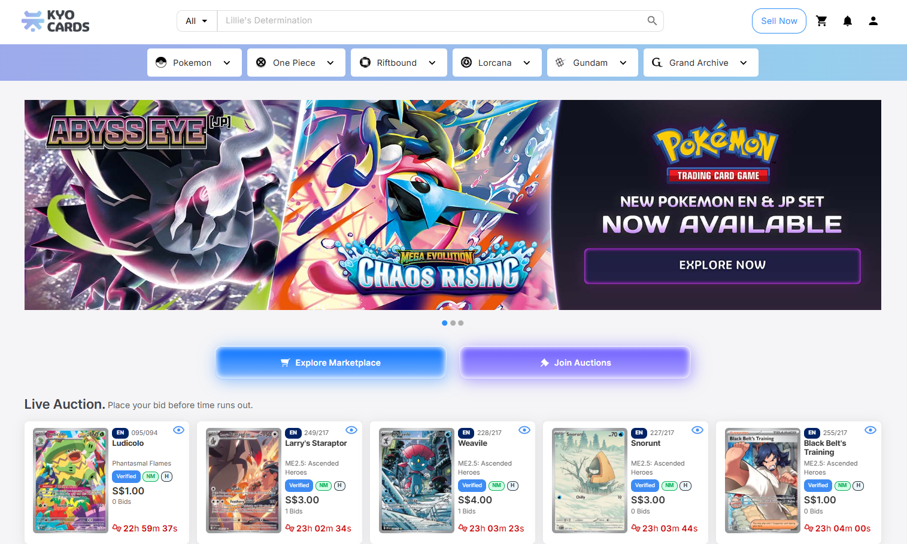
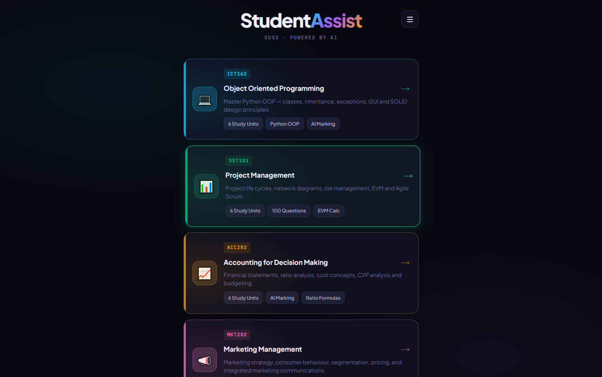

What I'm working on right now.

KyoCards Marketplace Lead PM · Product Owner · Co-founder
Co-founded the marketplace and got it from scratch to a working MVP in 4 months. 8 engineers, fixed budget, a trade-show launch date we couldn't move. By the end of Year 1 the platform had cleared 10,000 registered users. The day-to-day was the unglamorous stuff. PRDs, acceptance criteria, running the full Jira sprint cycle with the team, and a lot of mid-sprint scope conversations with funders and co-founders when new things kept getting pushed in.

StudentAssist Solo · AI study companion
Started because I needed it for my own SUSS modules. An AI-backed study companion covering 3 modules so far (ICT162, SST101, ACC202) with 4 study modes: flashcards, guided lessons, AI-marked assessments, and a timed exam mode. Solo build, offline-first PWA. The question-bank schema and the AI-marking pipeline are the parts I'm still iterating on.

PrepMe Solo · Interview prep
Drills, mock rounds, AI feedback on my answers. PrepMe started as a personal tool because the PM interview prep stuff out there is either too generic or too expensive. Still iterating on the prompt scaffolding and the AI scoring loop. That's most of where the interesting work sits.
BPMtracker Solo · Health PWA
A blood-pressure PWA for households with more than one user. Offline-first, the readings persist between sessions, and the log view is intentionally bare. The bar I set for myself was that someone non-technical shouldn't have to think about how to use it.